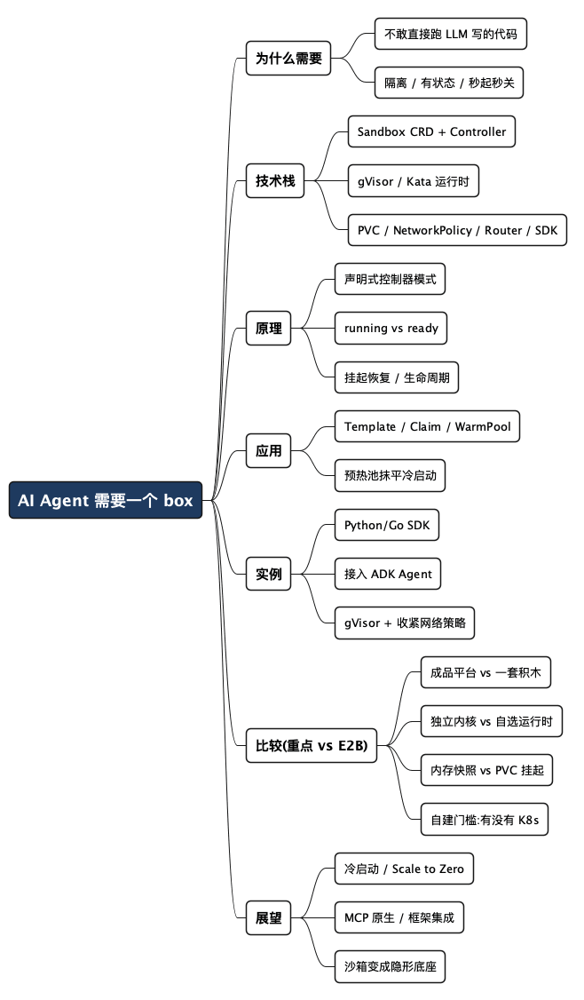

AI Agent 需要一个 box
Posted on 五 21 8月 2026 in Tech
| Abstract | AI Agent 需要一个 box |
|---|---|
| Authors | Walter Fan |
| Category | Tech |
| Version | v1.0 |
| Updated | 2026-08-21 |
| License | CC-BY-NC-ND 4.0 |
去年我第一次让一个 coding agent 帮我改一段脚本，它写得挺利索，然后自作主张跑了一句清理命令，把我一个临时目录连带没备份的测试数据一起删了。数据不重要，但那一下让我出了身冷汗——如果这是在一台能碰到生产的机器上呢？
这就是 AI Agent 落地时绕不开的一道坎：大模型现在很会写代码、很会调工具，但它写出来的东西，你不敢闭着眼睛在自己的机器上执行。 它可能死循环把 CPU 打满，可能 pip install 一个投毒的包，可能顺着网络摸到你的内网。你需要一个地方，让它随便折腾——跑坏了,把盒子一扔就行，伤不到外面。
这篇文章讲的就是这个“盒子”。我会以 Kubernetes 官方孵化的 agent-sandbox 项目为主线，把 Agent 运行环境的技术栈、原理、用法、实例、横向比较和未来趋势一次说清楚。读完你能带走的是：什么时候该自己搭、什么时候直接买服务，以及一套能落地的判断标准。
- 一句话结论：Agent 缺的不是更强的模型，是一个隔离、有状态、能秒起秒关的执行环境。
- 一个提醒：容器 ≠ 安全边界。跑不可信代码，普通 Docker 容器是不够的。
先讲清楚：这里说的“沙箱”到底是什么
“沙箱”这个词被用滥了，先划清楚边界。这里说的沙箱，指的是一个运行不可信代码的隔离执行环境，它要同时满足几个条件：
- 强隔离:里面的代码碰不到宿主机的内核和文件,也串不到隔壁的沙箱。这是安全底线。
- 有状态:你写进去的文件、装好的依赖,在一次会话里能留住,不像无状态函数那样每次都从零开始。
- 单例、有稳定身份:一个 Agent 会话对应一个盒子,有固定的主机名和网络地址,方便你连上去发指令。
- 能秒起秒关:Agent 用完就扔,创建太慢体验就垮了。
Kubernetes 本来擅长的是两类活:一类是无状态、可水平复制的 Deployment;另一类是编了号、有序的 StatefulSet。但上面这种“一次性、有状态、单容器、要强隔离”的活,两边都不太贴。硬用 StatefulSet(副本数=1) + Service + PVC 拼出来,能跑,但很别扭,而且缺了休眠、定时销毁这类专门的生命周期管理。
agent-sandbox 做的事,就是把这套拼装活儿封装成一个叫
Sandbox的一等公民。 它是 Kubernetes SIG Apps 下的项目,给你一个声明式的 CRD,专门管这种“像轻量单容器虚拟机”的工作负载。
有一点要特别强调:agent-sandbox 自己不做底层的容器隔离。 它是个“沙箱编排器”,真正的隔离交给 gVisor、Kata Containers 这类“安全运行时”,通过 Kubernetes 的 RuntimeClass 挂上去。这个分工很关键,后面讲原理和安全时还会回到它。
技术栈:这个盒子是用什么搭起来的
agent-sandbox 整体是标准的 Kubernetes 生态选型,没有另起炉灶:
| 层次 | 技术 | 干什么 |
|---|---|---|
| 编排 API | Sandbox CRD + Controller(Go 写的) |
声明式地管一个有状态单 Pod 的生命周期 |
| 扩展 API | SandboxTemplate / SandboxClaim / SandboxWarmPool |
模板复用、按需申领、预热池 |
| 隔离运行时 | gVisor / Kata Containers(经 RuntimeClass) |
真正的内核 + 网络隔离 |
| 存储 | PVC / volumeClaimTemplates |
持久化,支持挂起后再恢复 |
| 网络 | Headless Service + NetworkPolicy | 稳定 DNS 身份 + 出入流量管控 |
| 接入层 | sandbox-router(HTTP 代理) | 让 SDK 不碰 K8s 原语就能连到沙箱 |
| SDK | Python / Go(TypeScript 在路上) | 应用层用几行代码创建、执行、销毁 |
这张表里名词密度有点高,先挑几个最关键的用大白话解释一遍,免得后面看不懂(全部术语的速查表在文末):
- 容器(Container):把程序和它需要的一切打包成的一个独立运行单元,像个"集装箱"——搬到哪台机器,拆开都能一样地跑。Pod 是 Kubernetes 里装容器的最小单位,你可以先粗略地把"Pod"当成"一个跑着代码的容器"。
- CRD(Custom Resource Definition,自定义资源定义):Kubernetes 内置了 Pod、Service 这些"物种",CRD 允许你发明一个新物种。
Sandbox就是这么造出来的,于是你能像kubectl get pods一样kubectl get sandboxes。打个比方:K8s 本来只认"苹果、香蕉",CRD 让你教会它认识一种新水果"沙箱",从此它也会打理这种水果。 - Controller(控制器)/ 声明式:"声明式"是指你只说"我想要的最终样子"(我要一个跑着的 Sandbox),不用交代"每一步怎么做"。Controller 就是那个替你干活的管家——它不停地对比"你要的"和"现状",努力把现状拉到你要的样子。你说一句"我要个 Sandbox",它就默默把底层的 Pod、Service、PVC 全建好。打个比方:你在恒温器上设 26 度(声明),空调自己不停调节(控制器),你不用管它怎么开关压缩机。
- gVisor / Kata(安全运行时):普通容器都共享宿主机的内核(操作系统最核心、直接管硬件的那层),坏代码钻内核漏洞就可能"越狱"到宿主机。这两个是加固方案:gVisor 在容器和真内核之间插一层"用户态内核",像个中间人安检,拦下容器发出的系统调用;Kata 更狠,给每个容器套一个轻量虚拟机、配独立内核。打个比方:普通容器是"合租,共用一个厨房";gVisor 是"合租但请了个管家帮你转达、不让你直接进公共厨房";Kata 是"干脆给你一套独立公寓"。
- PVC(PersistentVolumeClaim,持久卷声明):容器默认"用完即弃",里面写的文件重启就没。PVC 是你"申请一块能跨重启活下来的硬盘"。沙箱挂起时数据存这儿,恢复时再挂回去。打个比方:容器是酒店房间(退房就清空),PVC 是你自带的行李箱(走哪带哪)。
技术栈本身不新奇,巧妙在于组合:用 CRD 把这套复杂拼装收成一个声明式 API,把安全隔离外包给专门的运行时,把冷启动的痛用预热池抹平。
原理:从一行 YAML 到一个能跑代码的盒子
agent-sandbox 走的是经典的 Kubernetes 控制器模式(就是上面"恒温器"那个比方):用户声明想要什么,控制器负责变成现实。
最小的一个 Sandbox 长这样:
apiVersion: agents.x-k8s.io/v1beta1
kind: Sandbox
metadata:
name: my-sandbox
spec:
podTemplate:
spec:
containers:
- name: my-container
image: <YOUR_IMAGE>
你 kubectl apply 之后,控制器接手,大致做这么几件事:
- 按
podTemplate建一个 Pod,这是真正跑代码的地方。 - 需要的话建一个 Headless Service,给它一个稳定的集群内 DNS 名字(比如
my-sandbox),这样别人能稳定地找到它。(Pod 会重启、IP 会变,Service 就是给它一个不变的"门牌号";Headless 是其中一种,直接把门牌号指到 Pod 本身。) - 有
volumeClaimTemplates就建 PVC,把持久存储挂上。 - 持续更新状态,直到
Ready条件为真——Pod 真的起来、有 IP、Service 也就绪了。
这里有个容易踩的坑,项目文档也特意点出来:“running”和“ready”是两回事。 operatingMode: Running 只是你的意图(“请保持一个 Pod 在跑”),不代表 Pod 已经起来了;真正“能干活了”要看 Ready 这个观测条件。程序里要判断沙箱可用,认 Ready,别认 operatingMode。
挂起与恢复:让空闲的盒子不烧钱
Agent 经常是“聊几句、跑一下、又空着”。让盒子一直占着 CPU 太浪费。agent-sandbox 支持基于 PVC 的挂起/恢复:
spec:
operatingMode: Suspended # 从 Running 改成 Suspended
改成 Suspended,控制器会终止 Pod,但保留 Sandbox 对象和它的存储卷。等你要用了再切回 Running,存储原样挂回来。计算资源释放了,状态还在。
生命周期:到点自动收尾
Agent 场景里有大量“用一次就该扔”的沙箱(比如强化学习的一轮评测)。手动清理不现实,靠的是声明式的生命周期:
spec:
shutdownTime: "2026-08-22T00:00:00Z" # 到这个绝对时间就过期
shutdownPolicy: Delete # 过期后连 Sandbox 对象一起删;Retain 则保留
到点了,控制器自动拆掉底层资源。Delete 是彻底删,Retain 是留个壳、把状态标成过期,方便事后审计。
应用:三个 CRD 撑起真实的用法
光有 Sandbox 还不够顺手。真到了要给成百上千个 Agent 会话开盒子的时候,靠三个扩展 CRD 分工:
SandboxTemplate:管理员定义的蓝图。把镜像、运行时、存储、安全策略写死在模板里,普通用户不用关心细节。SandboxClaim:用户侧的“申领单”。我不关心底层怎么配的,我只说“给我来一个”。SandboxWarmPool:预热池。提前把 N 个盒子暖好放着,来单子直接从池子里拿。
预热池解决的是冷启动这个体验杀手。项目文档给的数字很直白:
- 不用预热池:冷创建要 10–30 秒(拉镜像 + 起容器/虚拟机)。
- 用预热池:2 秒以内就能拿到一个已经在跑的盒子。
原理也不绕:WarmPool 直接建一批带特定 label 的 Pod 挂在那儿;你提 SandboxClaim 的时候,控制器从池子里挑一个已经跑起来的 Pod 认领过去,同时自动再补一个新的进池子,维持水位。你等的不是“建一个新盒子”,而只是“把一个现成盒子的名牌换成你的”。
安全上,预热的一个隐含好处:通过模板创建时,如果没显式设置 automountServiceAccountToken,控制器会默认把它设成 false——也就是默认不把 K8s 的凭证塞进沙箱,避免里面的不可信代码拿着 token 去调 API Server(K8s 的"总控制台",能操控整个集群)。这里的 token 相当于"集群管理员的钥匙",默认不塞进盒子,就是不给不可信代码翻墙进总控制台的机会。安全默认值,值得点个赞。
实例:让 Agent 真的把代码跑进盒子里
讲了半天 YAML,来看应用层怎么用。agent-sandbox 提供了 Python 和 Go 的 SDK,好处是你不用直接碰 Kubernetes 原语——SDK 通过 sandbox-router 这个 HTTP 代理和盒子通信。
Python 侧最小可用的样子:
from k8s_agent_sandbox import SandboxClient
client = SandboxClient() # 默认走 tunnel 模式,本地 kubectl port-forward,KinD/Minikube 都行
sandbox = client.create_sandbox(
warmpool="python-sandbox-pool",
namespace="default",
)
try:
# 写一个文件进沙箱,再在里面执行
sandbox.files.write("hello.py", 'print("Hello from inside the sandbox!")\n')
result = sandbox.commands.run("python3 hello.py")
print(result.stdout) # Hello from inside the sandbox!
finally:
sandbox.terminate() # 用完就扔
这段代码把 Agent 沙箱的核心动作全占了:创建 → 写文件 → 执行命令 → 读结果 → 销毁。try/finally 保证不管中间报没报错,盒子最后都会被回收——这是省钱也是省心的关键。
再进一步,把它接进一个真正的 Agent。下面是官方用 Google ADK(Agent Development Kit,Google 开源的搭 Agent 的框架)做的一个 coding agent,把“执行 Python”封装成一个工具函数交给大模型调:
from google.adk.agents.llm_agent import Agent
from k8s_agent_sandbox import SandboxClient
def execute_python(code: str):
sb = SandboxClient()
sandbox = sb.create_sandbox(warmpool="python-sandbox-pool", namespace="default")
try:
sandbox.files.write("run.py", code)
result = sandbox.commands.run("python3 run.py")
return result.stdout
finally:
sandbox.terminate()
root_agent = Agent(
model="gemini-3.7-flash",
name="coding_agent",
description="Writes Python code and executes it in a sandbox.",
instruction="你是一个助手,会写 Python 代码并在沙箱里执行,用 execute_python 工具来跑。",
tools=[execute_python],
)
逻辑一目了然:模型负责“写代码”,execute_python 负责“把代码扔进盒子跑,把结果拿回来”。模型再离谱,rm -rf 也只能删到盒子里,finally 一到,盒子灰飞烟灭。开头那身冷汗,到这儿就出不来了。
如果要生产级的强隔离,给模板加上 gVisor 运行时和收紧的网络策略:
apiVersion: extensions.agents.x-k8s.io/v1beta1
kind: SandboxTemplate
metadata:
name: secure-datascience-template
spec:
podTemplate:
spec:
runtimeClassName: gvisor # 用 gVisor 做运行时隔离
securityContext:
runAsNonRoot: true # 非 root 运行
runAsUser: 1000
containers:
- name: my-container
image: busybox
networkPolicy:
# 只放行 DNS(53 端口),其余出站一律默认拒绝——
# 顺带把访问 K8s API Server 的路也堵死了
egress:
- ports:
- protocol: UDP
port: 53
- protocol: TCP
port: 53
这份模板同时做了三件“把盒子焊死”的事:gVisor 做内核隔离、非 root 运行、默认拒绝出站只留 DNS。不可信代码在里面既碰不到宿主内核,也摸不到内网和 API Server。这才是“敢让 LLM 随便跑”的底气来源。
比较:重点说说 agent-sandbox 和 E2B
这个赛道选手一大把——E2B、Daytona、Modal、Vercel Sandbox、Cloudflare Sandbox。但最值得和 agent-sandbox 摆在一起细看的是 E2B:它俩都打“开源、可自建、认真做隔离”这张牌,却是两种完全不同的活法。搞懂它俩的区别,基本就摸清了整个赛道的分界线。
先看全景,再单独掰扯 E2B(数字来自厂商文档和 2025–2026 独立评测,会随时间变,当参考值):
| 方案 | 隔离方式 | 冷启动 | 部署形态 | 特点 |
|---|---|---|---|---|
| agent-sandbox | gVisor / Kata(自选) | 预热池 2 秒内 | 自建 K8s | 开源、K8s 原生、厂商中立 |
| E2B | Firecracker microVM | ~125–200ms 冷启 / 快照恢复 5–30ms | 托管 / 可自建(Apache-2.0) | SDK 成熟,内存级 pause/resume |
| Daytona | 容器(默认)/ Kata 可选 | 官方称 ~90ms | 托管 / 企业自建 | 面向 dev 环境,支持 GPU |
| Modal | gVisor | ~2.4 秒创建 | 托管 | serverless,按活跃 CPU 计费,scale to zero |
| Vercel Sandbox | Firecracker microVM | 快速 | 托管 | 默认持久,和 Vercel 生态绑 |
一句话概括这对差异
E2B 是一个“成品平台”,agent-sandbox 是一套“积木”。
E2B 给你的是一整个自成体系的系统:它自带控制面、调度器(orchestrator),底下跑着一队 Firecracker microVM(AWS 开源的"微虚拟机",启动毫秒级,专为一次性 serverless 负载设计),自建时靠 Terraform + Nomad + Consul(一套"基础设施即代码"和集群调度的工具组合,可以理解为"K8s 之外的另一套集群管理体系")起一整套集群。你要么直接用它的托管云,要么把这整套东西搬到自己的云上。
agent-sandbox 不是一个“系统”,它是 Kubernetes 里的一组 CRD。它不自带控制面——它直接复用你已有的 K8s 控制面,隔离外包给 gVisor/Kata。如果你手上已经有 K8s 集群,加上 agent-sandbox 几乎是零增量;如果没有,那你得先有个 K8s。
这条分界线决定了后面所有的差异。
隔离:独立内核 vs 自选运行时
E2B 每个沙箱是一个 Firecracker microVM,有自己独立的内核。跑不可信的 LLM 代码,这是很硬的边界——沙箱里的内核崩了、被攻破了,也伤不到宿主和别的租户。代价是启动要付虚拟机的“开机税”,冷启动约 125–200ms(用内存快照恢复能压到 5–30ms)。
agent-sandbox 自己不做隔离,它只是编排 Pod,把隔离这件事交给你在 RuntimeClass 里选的运行时:gVisor(用户态内核,拦系统调用)或 Kata(轻量虚拟机,和 Firecracker 一个思路)。灵活是灵活,但也意味着隔离强度由你自己负责——你要是图省事没配 gVisor/Kata,那就退化成普通容器隔离,跑不可信代码是不够的。E2B 把这个决定替你做了,agent-sandbox 把方向盘交回你手里。
状态:内存快照 vs PVC 挂起
这是两者体感差最大的地方,也最容易踩坑。
E2B 的 pause/resume 连内存一起存:文件系统、正在跑的进程、加载好的变量,全都保下来,恢复时原样回来,约 1 秒。对“聊到一半、上下文都在内存里”的 Agent 会话特别友好。代价是 pause 本身有成本(约每 GiB 内存 4 秒),而且 beta 期沙箱有 30 天上限。
agent-sandbox 的挂起是基于 PVC 的:切到 Suspended,它终止 Pod、保住存储卷,恢复时把卷挂回来。注意:它保的是磁盘状态,不保内存状态——Pod 一终止,内存里的东西就没了。你得自己把要留的东西落盘。这不是缺陷,是不同的取舍:E2B 替你把内存也快照了(所以有成本、有时限),agent-sandbox 只保你明确写进 PVC 的东西(更省、更可控,但要你自己管)。
自建成本:这才是真正的分水岭
两家都号称“开源可自建”,但自建的门槛差着量级。
E2B 自建是真自建:它的 e2b-dev/infra 仓库确实是 Apache-2.0,控制面都在里面,但你要跑起来得备齐 Terraform / Nomad / Consul,还有 GCP 最低配额(约 2500 GB SSD + 24 CPU),按 list price 光这个底座每月就 ~1250 美元起,一个沙箱还没跑呢。独立分析给的经验值:CPU-only 负载下,自建要到大约 11000 沙箱小时/月(约等于 15 个沙箱常年不停)才比托管划算。量不到,老老实实买托管。
agent-sandbox 的自建成本,取决于你有没有 K8s。已经在用 K8s 的团队,它几乎是白送的增量——kubectl apply 一个 manifest 就装上了,复用现有集群、现有监控、现有权限体系。反过来,如果你没有 K8s,那你要付的是“运维一个 K8s 集群”的长期成本,这可不便宜。
到底该选哪个
我的判断,拿几个具体场景说:
- 快速验证一个 Agent 想法,量不大 → 直接上 E2B 托管云,几行 SDK 就能跑,别碰基础设施。
- 要内存级的会话恢复(比如长对话、REPL 状态要留住) → E2B 的内存快照是现成的,agent-sandbox 得你自己想办法落盘。
- 团队已经重度用 K8s,要数据不出门、要厂商中立 → agent-sandbox 几乎是顺理成章的选择,复用一切现有 K8s 能力。
- 要极致隔离但不想自己扛虚拟机运维 → E2B 的 Firecracker 是默认强隔离;agent-sandbox 你得自己配 Kata 才能到同一档。
- 超大规模、要把单位成本压到最低 → 两边都得自建,这时比的是你更熟 K8s 还是更熟 Nomad/Consul,以及谁能给你一个“有人背 pager”的运维团队。
一句话:E2B 用“替你决定”换省心,agent-sandbox 用“交给你决定”换控制权。 前者适合还没有基础设施包袱、想快的团队;后者适合已经站在 Kubernetes 上、要把主动权攥在手里的团队。
最后提醒一句所有方案都躲不掉的坑:隔离不是打个勾就完事。 独立评测里提过一个真实教训——某云厂商的 Agent 运行时出过 DNS 隧道逃逸漏洞。隔离是一整套栈(运行时 + 网络策略 + 权限),选了“支持隔离”的产品不等于万事大吉,该收紧的网络策略、该关的 token,一样都不能省。
展望:盒子会越来越“隐形”
从 agent-sandbox 的 roadmap 能看出这个领域的几个方向,我挑几个我觉得最实在的:
- 冷启动继续压。 目标是把认领延迟从 200ms 压到 100ms 再到 50ms,还提出了 TFFI(Time to First Instruction,从调用到跑出第一条指令的时间)这个更贴近体感的指标。盒子起得越快,Agent 用起来越像“本地就有”。
- Scale to Zero + 自动挂起/恢复。 空闲自动挂起、来流量自动唤醒。理想状态是:你几乎感觉不到盒子的存在,它按需出现、按需消失,账单只算真正用的那点。
- MCP 原生接入。 roadmap 里计划让 agent-sandbox 直接变成 MCP(Model Context Protocol,模型上下文协议——Anthropic 提出的开放标准,给大模型和外部工具定义一套"通用插头")的一个原生工具。这意味着支持 MCP 的大模型运行时能把“开个沙箱跑代码”当成一个标准工具直接调,不用再手写胶水。
- 和 Agent 框架打通。 LangChain、CrewAI、Ray(RLlib)这些框架的原生集成都在推进。强化学习(RL,让 AI 通过"不断试错 + 奖惩反馈"来学习)的评测循环(比如 SWE-bench——衡量"AI 能不能自动修真实 GitHub bug"的评测基准)对高吞吐、低延迟的一次性沙箱需求极大,这块是 agent-sandbox 明确瞄准的场景。
往大了说,我的判断是:沙箱正在从“一个你要手动管理的组件”,变成“Agent 运行时里一个默认存在、你基本无感的底座”。 就像今天没人会为“进程要不要隔离地址空间”纠结一样,再过一阵,“Agent 跑代码要不要放沙箱”也会变成不用问的默认选项。
总结:Agent 缺的不是脑子,是一个能随便扔的盒子
回到开头那身冷汗。让 AI Agent 真正敢在生产里干活,关键不在把模型调得更聪明,而在给它一个隔离、有状态、秒起秒关的执行环境——出了事,损失被死死圈在盒子里。
agent-sandbox 的价值,是把这件原本要靠 StatefulSet + Service + PVC 手动拼装的苦活,收成一个 Kubernetes 原生、厂商中立、开源的声明式 API,再把安全隔离外包给 gVisor / Kata,把冷启动的痛用预热池抹平。
给你一份可以照着走的判断清单:
- 先问隔离够不够。 跑不可信代码,普通容器不行,得上 gVisor 或 Kata——用 agent-sandbox 记得自己配,别退化成裸容器。
- 想清楚要不要内存级恢复。 要留住内存里的会话状态,E2B 现成;agent-sandbox 只保 PVC,得自己落盘。
- 按“有没有 K8s”决定自建还是买。 已重度用 K8s、要数据自主 → agent-sandbox;没基础设施、想快 → E2B 托管;超大规模再谈自建 E2B。
- 默认收紧权限。 非 root、关掉 service account token 自动挂载、默认拒绝出站只留必要端口。
- 一定要
finally里销毁。 用完就扔,是省钱也是安全。
给 Agent 一个盒子,不是限制它,是给它松绑——有了兜底,它才敢真的动手。
如果你正打算把某个 coding agent 或 RL 评测搬上生产,不妨先花半天,用 KinD 跟着官方 quickstart 把 agent-sandbox 跑一遍。真正理解一个“盒子”长什么样,比读十篇选型文章都管用。
附录:术语速查表
本文名词不少,这里按"从基础到上层"排一张速查表,每个配一句大白话和权威参考。第一次读不用全记,用到哪个查哪个。
一、容器基础
| 术语 | 一句话解释 | 参考 |
|---|---|---|
| 容器 Container | 把程序和它的依赖打包成的独立运行单元,像"集装箱",搬到哪都一样跑 | Docker: What is a Container |
| 镜像 Image | 容器的"母盘/模板",容器是母盘生成的运行实例 | Docker Docs: Image |
| 内核 Kernel / 系统调用 | 操作系统最核心、直接管硬件的那层;程序要用硬件得"喊一声"(系统调用)让内核代劳 | Wikipedia: System call |
二、隔离运行时(安全核心,隔离一个比一个狠)
| 术语 | 一句话解释 | 参考 |
|---|---|---|
| runc | 默认容器运行时,直接共享宿主机内核,快但不适合跑不可信代码 | runc GitHub |
| gVisor | 在容器和真内核间插一层"用户态内核",拦系统调用,像中间人安检 | gVisor Docs |
| Kata Containers | 给每个容器套一个轻量虚拟机、配独立内核,隔离最强 | Kata 官网 · Docs |
| Firecracker microVM | AWS 开源的"微虚拟机",毫秒级启动,E2B 底层就用它 | Firecracker GitHub · AWS 博客 |
三、Kubernetes 相关
| 术语 | 一句话解释 | 参考 |
|---|---|---|
| Kubernetes / K8s | 管理成百上千容器的"操作系统",你说要什么状态,它自动实现 | K8s 概念(中文) |
| Pod | K8s 最小调度单位,里面装一个或几个容器,是"真正跑代码的地方" | K8s: Pod(中文) |
| CRD | 让你在 K8s 里"发明一个新物种"(比如 Sandbox) | K8s: CRD(中文) |
| Controller / 声明式 | 你声明"最终样子",控制器像恒温器一样不停把现状拉到目标 | K8s: 控制器(中文) |
| Deployment / StatefulSet | K8s 原有的两类工作负载:无状态可复制 / 有状态有编号;沙箱两者都不贴 | Deployment · StatefulSet |
| Service / Headless | 给会变 IP 的 Pod 一个稳定"门牌号" | K8s: Service(中文) |
| PV / PVC | 申请一块跨重启活下来的硬盘,像"自带的行李箱" | K8s: 持久卷(中文) |
| NetworkPolicy | Pod 的"防火墙规则",管它能连谁、谁能连它 | K8s: 网络策略(中文) |
| RuntimeClass | K8s 里"选运行时"的开关,写 runtimeClassName: gvisor 就用 gVisor 跑 |
K8s: RuntimeClass(中文) |
| ServiceAccount / Token | Pod 的"身份证 + 密码",能调 K8s 总控制台;跑不可信代码要默认不塞进去 | K8s: ServiceAccount(中文) |
四、Agent 生态与工具
| 术语 | 一句话解释 | 参考 |
|---|---|---|
| AI Agent | 能自己决定调用工具、执行动作去完成任务的大模型程序 | Anthropic: Building Effective Agents |
| SDK | 现成的代码库,几行代码就能用某个服务,不用懂底层 | agent-sandbox Python SDK |
| MCP | 大模型和外部工具之间的"通用插头"标准 | MCP 官网 · Anthropic 介绍 |
| ADK | Google 开源的搭 Agent 的框架 | Google ADK Docs |
| RL / SWE-bench | 试错+奖惩的学习方法 / 衡量"AI 能否自动修真实 GitHub bug"的基准 | SWE-bench 官网 |
| Nomad / Consul / Terraform | K8s 之外的另一套集群调度 + 基础设施即代码工具,E2B 自建用它们 | HashiCorp |
五、本地上手工具
| 术语 | 一句话解释 | 参考 |
|---|---|---|
| KinD | Kubernetes in Docker,把 K8s 跑在 Docker 容器里,本地学习/测试首选 | KinD 官网 |
| minikube | 单机版 K8s,支持更多运行时(比如 Kata) | minikube 官网 |
建议学习顺序:容器/内核 → K8s/Pod/Service/PVC → CRD/Controller/声明式 → runc/gVisor/Kata → Agent/SDK/MCP。别一次全啃,按这个梯子爬。
全文思维导图
@startmindmap
<style>
mindmapDiagram {
node {
BackgroundColor #F8F9FA
RoundCorner 10
Padding 10
FontSize 13
}
:depth(0) {
BackgroundColor #1E3A5F
FontColor white
FontSize 18
FontStyle bold
}
:depth(1) {
FontSize 15
FontStyle bold
}
:depth(2) {
FontSize 13
}
}
</style>
* AI Agent 需要一个 box
** 为什么需要
*** 不敢直接跑 LLM 写的代码
*** 隔离 / 有状态 / 秒起秒关
** 技术栈
*** Sandbox CRD + Controller
*** gVisor / Kata 运行时
*** PVC / NetworkPolicy / Router / SDK
** 原理
*** 声明式控制器模式
*** running vs ready
*** 挂起恢复 / 生命周期
** 应用
*** Template / Claim / WarmPool
*** 预热池抹平冷启动
** 实例
*** Python/Go SDK
*** 接入 ADK Agent
*** gVisor + 收紧网络策略
** 比较(重点 vs E2B)
*** 成品平台 vs 一套积木
*** 独立内核 vs 自选运行时
*** 内存快照 vs PVC 挂起
*** 自建门槛:有没有 K8s
** 展望
*** 冷启动 / Scale to Zero
*** MCP 原生 / 框架集成
*** 沙箱变成隐形底座
@endmindmap

本作品采用知识共享署名-非商业性使用-禁止演绎 4.0 国际许可协议进行许可。 欢迎在我的个人网站 https://www.fanyamin.com 访问原文并评论。